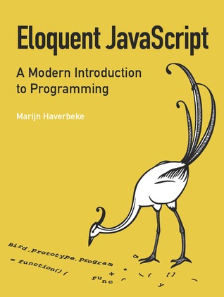

Eloquent JavaScript: A Modern Introduction to Programming
A concise and balanced mix of principles and pragmatics. I loved the tutorial-style game-like program development. This book rekindled my earliest joys of programming. Plus, JavaScript!" —Brendan Eich, creator of JavaScript
JavaScript is the language of the Web, and it's at the heart of every modern website from the lowliest personal blog to the mighty Google Apps. Though it's simple for beginners to pick up and play with, JavaScript is not a toy—it's a flexible and complex language, capable of much more than the showy tricks most programmers use it for.
Eloquent JavaScript goes beyond the cut-and-paste scripts of the recipe books and teaches you to write code that's elegant and effective. You'll start with the basics of programming, and learn to use variables, control structures, functions, and data structures. Then you'll dive into the real JavaScript artistry: higher-order functions, closures, and object-oriented programming.
Along the way you'll learn to:
Master basic programming techniques and best practices Harness the power of functional and object-oriented programming Use regular expressions to quickly parse and manipulate strings Gracefully deal with errors and browser incompatibilities Handle browser events and alter the DOM structure Most importantly, Eloquent JavaScript will teach you to express yourself in code with precision and beauty. After all, great programming is an art, not a science—so why settle for a killer app when you can create a masterpiece?
Comments